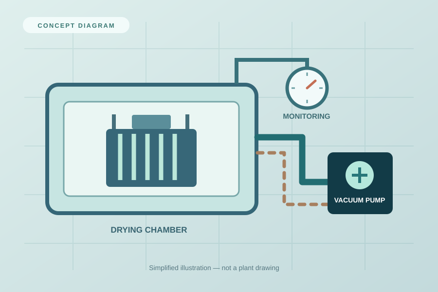

01 / The engineering problem
Transformer vacuum drying requires careful attention to process integrity and monitoring. During my placement, I investigated issues affecting the reliability of drying and how progress could be assessed more effectively.

02 / What I worked on
I benchmarked vacuum-drying operations, recorded air-ingress observations, and prepared a technical report with recommendations related to sealing improvements, dew-point monitoring, and tracking extracted water as a measure of drying progress.
03 / Approach and workflow
04 / Original project evidence
These spaces are reserved for my actual engineering work: software screenshots, calculations, drawings, measured or simulated results, and explanatory captions. They have not been populated with invented findings.
05 / Engineering reflection
The key lesson was that a credible process improvement starts with measurable evidence. Recommendations should be connected to a practical verification approach instead of assuming that a proposed change has already delivered savings.
This case study can be expanded with verified figures and a short methods-and-results summary once the supporting materials are selected.